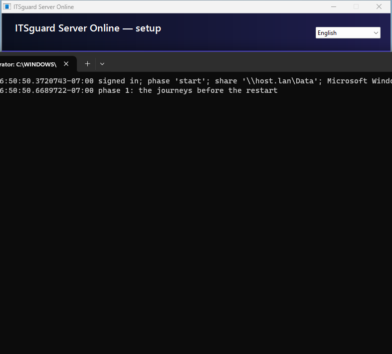
window only


window only


window only


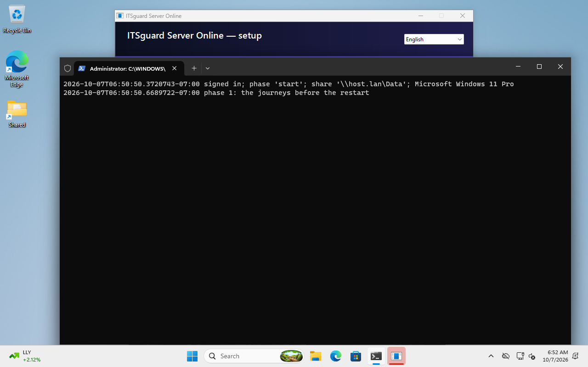
window only

window only


window only


window only
phase: before-reboot | windows: Microsoft Windows 11 Pro 10.0.26200 build 26200 | computer: WIN-5NUF1VHG28U | package: OnlineBackup-Server-0.1.30.zip | commit: None | run: None | started: 2026-10-07T06:50:59.5127101-07:00 | resolution: 1280x800 | dpi: 100 | powershell: 5.1.26100.7920 | interactive: True | user: WIN-5NUF1VHG28U\Docker
phase: after-reboot | windows: Microsoft Windows 11 Pro 10.0.26200 build 26200 | computer: WIN-5NUF1VHG28U | package: OnlineBackup-Server-0.1.30.zip | commit: None | run: None | started: 2026-10-07T06:55:23.5643390-07:00 | resolution: 1280x800 | dpi: 125 | powershell: 5.1.26100.7920 | interactive: True | user: WIN-5NUF1VHG28U\Docker
phase: after-reboot | windows: Microsoft Windows 11 Pro 10.0.26200 build 26200 | computer: WIN-5NUF1VHG28U | package: OnlineBackup-Server-0.1.30.zip | commit: None | run: None | started: 2026-10-07T06:58:28.1478715-07:00 | resolution: 1280x800 | dpi: 150 | powershell: 5.1.26100.7920 | interactive: True | user: WIN-5NUF1VHG28U\Docker
FUNCTIONAL: the action worked, proven from outside the product (Windows, the server, SHA-256). VISUAL: no visual finding of severity Medium or High on its screens. UX: every written flow check passed. A screenshot never proves a backup: only the SHA-256 comparison does.
| Step | Result | Expected | Actual (what the oracle saw) | Screen |
|---|---|---|---|---|
| install-server.ps1 in Windows PowerShell (as the README says) | PASS | exit 0, service OnlineBackupServer Running | exit 0; Running | |
| The server service starts again with the licence | PASS | Running | Running | |
| Server service: automatic start, restarts after a failure | PASS | StartMode Auto, failure actions = restart | Auto; RESET_PERIOD (in seconds) : 86400 FAILURE_ACTIONS : RESTART -- Delay = 60000 milliseconds. RESTART -- Delay = 60000 milliseconds. RESTART -- Delay = 300000 milliseconds. | |
| Admin sign-in over HTTPS (password + authenticator) | PASS | a session | HTTP 200 | |
| A customer account for this computer | PASS | user qa-win | 1 users | |
| Download the client Setup.exe from the server (what the IT company hands out) | PASS | a signed-size program | HTTP 200, 13895415 bytes |
Evidence: windows-state.json · event-log.txt · service-events.txt · install-server.txt · server-logs


| Step | Result | Expected | Actual (what the oracle saw) | Screen |
|---|---|---|---|---|
| Setup.exe opens its window | PASS | the setup window within 120 s | ITSguard Server Online | |
| Installer 01 - Welcome | PASS | Welcome, the product, Next and Cancel | Welcome to the ITSguard Server Online setup | This installs ITSguard Server Online on this computer. It backs up your files to your provider's backup server, encrypted on this computer before they leave. | Computer: WIN-5NUF1VHG28U | Click Next to continue, or Cancel to exit. | English | Next | Cancel | 01-Installer-01---Welcome.png |
| Installer 02 - License agreement | PASS | the license text and an accept box | License agreement | Please read the license agreement. To continue, accept it. | ITSguard Server Online — license agreement 1. This software is licensed, not sold, by support (the provider) to back up your computers to the provider's backup service. 2. You may install it on the computers covered by your service agreement. You may not copy, change, decompile or resell it. 3. Your files are encrypted on this computer before they are sent. Keep your password: without it, backups cannot be restored. 4. The software sends the backup service what it needs to work: the computer's name, the backup status and logs. It checks for updates by itself. 5. The software is provided as is, as far as the law allows. The provider is not liable for indirect damage or for lost data beyond what your service agreement says. 6. Removing the software from this computer does not delete your backups on the server. | I accept the terms of the license agreement | English | Back | Install | Cancel | 02-Installer-02---License-agreement.png |
| Install is disabled before the license is accepted | PASS | not enabled | enabled=False | |
| Back returns to Welcome, Next comes back | PASS | Welcome, then the license again | Welcome to the ITSguard Server Online setup | This installs ITSguard Server Online on this computer. It backs up your files to your provider's backup server, encrypted on this computer before they leave. | Computer: WIN-5NUF1VHG28U | Click Next to continue, or Cancel to exit. | English | Next | Cancel | |
| Accept the license (tick the box) | PASS | ticked, Install enabled | ticked= install enabled=True | |
| Installer pages that exist | info | Welcome -> License agreement -> Installation (progress) -> Finish. There is no configuration page (folder, options) and no "Ready to install" page in the current installer. | ||
| Installer 04 - Installing (progress) | PASS | an "Installing" page with a progress bar | Installing ITSguard Server Online… | Please wait. This takes about a minute. | • ITSguard Server Online — https://localhost:8443 | • Installed to C:\Program Files\ITSguard Server Online | English | Cancel | 05-Installer-04---Installing--progress-.png |
| Installer 05 - Finish | PASS | the Finish page says it is installed | ITSguard Server Online is installed | It runs in the background and starts with Windows. When it opens, sign in with your user name and password, or open a new account. | Open ITSguard Server Online now | English | Finish | 06-Installer-05---Finish.png |
| The setup window closes after Finish | PASS | no setup window | 0 window(s) left | |
| Windows service manager: the backup service exists, starts automatically and is Running | PASS | OnlineBackupAgent Running, Auto | Running Auto as LocalSystem | |
| Its process runs from the installed program | PASS | the service PID is OnlineBackup.Agent.exe in the install folder | pid 4604 C:\Program Files\ITSguard Server Online\OnlineBackup.Agent.exe | |
| Installed programs list (Apps / Programs and Features) | PASS | one entry with a name, version and an uninstall command | ITSguard Server Online 0.1.30 [ITSguard Server Online] C:\Program Files\ITSguard Server Online | |
| The program files on disk | PASS | Agent, Client, Core, BouncyCastle, restic in the install folder | C:\Program Files\ITSguard Server Online; missing: | |
| The settings folder (ProgramData) belongs to SYSTEM and Administrators only | PASS | no Users / Everyone access | NT AUTHORITY\SYSTEM:FullControl; BUILTIN\Administrators:FullControl | |
| Start menu shortcut and start with Windows | PASS | a shortcut to the program, and one with --tray in Startup | C:\Users\Public\Desktop\ITSguard Server Online.lnk ; C:\ProgramData\Microsoft\Windows\Start Menu\Programs\ITSguard Server Online.lnk ; C:\ProgramData\Microsoft\Windows\Start Menu\Programs\Startup\ITSguard Server Online.lnk --tray; C:\ProgramData\Microsoft\Windows\Start Menu\Programs\Startup\ITSguard Server Online.lnk --tray | |
| Finish with "Open now" opens the program window | PASS | the program window | ITSguard Server Online | 07-Finish-with--Open-now--opens-the-program-window.png |
| UX: Installer: the first page says what will be installed | PASS | the product name and what it does | Welcome to the ITSguard Server Online setup | This installs ITSguard Server Online on this computer. It backs up your files to your provider's backup server, encrypted on this computer before they leave. | Computer: WIN-5NUF1VHG28U | Click Next to continue, or Cancel to exit. | English | Next | Cancel | |
| UX: Installer: a license agreement must be accepted before installing | PASS | Install disabled until accepted | enabled=False | |
| UX: Installer: a "Ready to install" summary before installing | FAIL | a page listing what will be installed and where | the license page's button installs at once (no configuration or ready page) | |
| UX: Installer: progress is visible while installing | PASS | a progress bar and what is being done | see the screenshot | |
| UX: Installer: the last page says the result and what to do next | PASS | installed + how to sign in | ITSguard Server Online is installed | It runs in the background and starts with Windows. When it opens, sign in with your user name and password, or open a new account. | Open ITSguard Server Online now | English | Finish |
Evidence: windows-state.json · event-log.txt · service-events.txt · server-logs
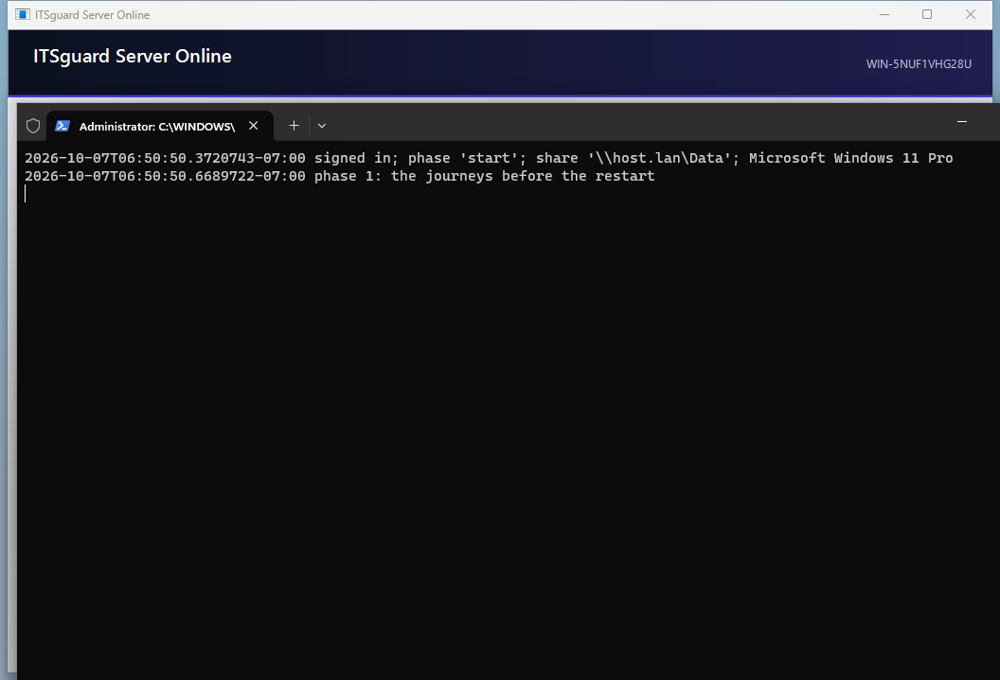


| Step | Result | Expected | Actual (what the oracle saw) | Screen |
|---|---|---|---|---|
| Client 01 - First run: the sign-in page | PASS | Sign in, the server, user name and password | English | Sign in to ITSguard Server Online | Sign in with the user name and password you received, or open a new account. | Backup server | https://localhost:8443 | Use a different server address | I already have an account | I am a new customer — open an account | User name | Password | Code from the authenticator app (only if it is on) | Sign in | Need help? Contact support. | 01-Client-01---First-run--the-sign-in-page.png |
| Accessibility | info | the field 'User name' has no name in UI Automation (a screen reader says only 'edit'); the robot found it under its label | ||
| Accessibility | info | the field 'Password' has no name in UI Automation (a screen reader says only 'edit'); the robot found it under its label | ||
| Messages while signing in | info | ITSguard Server Online: This computer is connected. Now choose what to back up. | ||
| Client 04 - Connected: the program asks what to back up | PASS | the "New backup" page | New backup | Files are encrypted on this computer before they leave, with your password. Without the password nothing can be restored — keep it safe. | Backup type | Files and folders | Backup name | Documents | Folders to back up | Daily backup time | 22:00 | New backup | Backup status | Restore | New backup | Security | Help | Version — · Check for updates | English | Powered by ITSguard Server Online | 04-Client-04---Connected--the-program-asks-what-to-back-up.png |
| ORACLE (server): this computer is registered and connected | PASS | the computer in the customer's list, connected | WIN-5NUF1VHG28U connected=1 seen=1791381138067 version=0.1.30.0 | |
| UX: Client: the first screen asks only for what the customer received | PASS | server (pre-filled), user name, password | English | Sign in to ITSguard Server Online | Sign in with the user name and password you received, or open a new account. | Backup server | https://localhost:8443 | Use a different server address | I already have an account | I am a new customer — open an account | User name | Password | Code from the authenticator app (only if it is on) | Sign in | Need help? Contact support. | |
| UX: Client: after signing in the program says the computer is connected and what to do next | PASS | a confirmation and the next step | ITSguard Server Online: This computer is connected. Now choose what to back up. |
Evidence: windows-state.json · event-log.txt · service-events.txt · server-logs


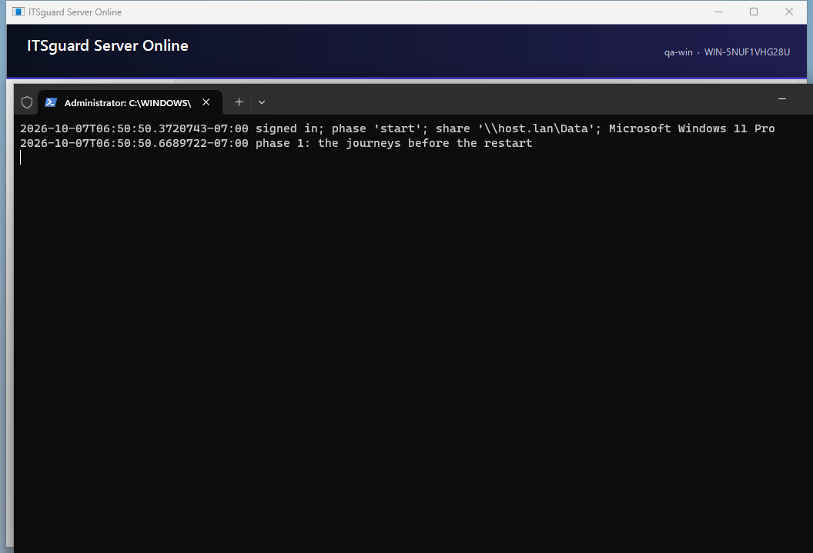
| Step | Result | Expected | Actual (what the oracle saw) | Screen |
|---|---|---|---|---|
| The golden dataset | info | 112 files: text, Hebrew and Japanese names, spaces, an empty file, 20 MB + 3 MB random, duplicates, 100 small files, a long path, read-only and hidden files | ||
| Client 05 - New backup page | PASS | type, name, the folder tree, time, the button | New backup | Files are encrypted on this computer before they leave, with your password. Without the password nothing can be restored — keep it safe. | Backup type | Files and folders | Backup name | Documents | Folders to back up | Daily backup time | 22:00 | New backup | Backup status | Restore | New backup | Security | Help | Version — · Check for updates | English | Powered by ITSguard Server Online | 01-Client-05---New-backup-page.png |
| Accessibility | info | the field 'Backup name' has no name in UI Automation (a screen reader says only 'edit'); the robot found it under its label | ||
| Tick the folder in the tree | info | C:\OnlineBackup-QA\Data (keyboard: name typed, space bar); not readable through UI Automation - the server's copy of the set is the proof (next step) | ||
| Messages when adding the backup | info | ITSguard Server Online: The backup was added | ||
| Client 08 - The backup is listed on the status page | PASS | a card 'QA files' with Back up now | Partly protected | Some backups finished with warnings or have not run yet. | Change | Back up now | QA files | C:\OnlineBackup-QA\Data | Automatic backup every day at 22:00 · last backup: Not yet · Not yet | Backup status | Restore | New backup | Security | Help | Version — · Check for updates | English | Powered by ITSguard Server Online || ITSguard Server Online: The backup was added | 04-Client-08---The-backup-is-listed-on-the-status-page.png |
| ORACLE (server): the backup set exists with the chosen folder | PASS | a set 'QA files' with source C:\OnlineBackup-QA\Data | set id 1791381170615; sources C:\OnlineBackup-QA\Data; computer WIN-5NUF1VHG28U | |
| Backup 1 - result | PASS | the server records a new run: ok; the window shows the result | server: BS_STOP_SUCCESS (new 112, bytes 24174191); window: Automatic backup every day at 22:00 · last backup: 2026-10-07-13-53-21 · Completed successfully ; messages: ITSguard Server Online: The backup has started | 07-Backup-1---result.png |
| Restore 1 - the source folder is deleted | PASS | no source folder (moved out of the product's reach until the check is done) | C:\OnlineBackup-QA\Data (kept by the robot in C:\obqa\source-aside-1) | |
| Restore 1 - Restore page | PASS | the backup, the latest point, the files, the folder | Restore | Backup | QA files | Restore point (date) | Latest — 2026-10-07-13-53-15 | Files (none selected = everything) | Filter by file or folder name | Restore to folder | C:\Users\Docker\Desktop\Restore | … | Replace existing files | Restore | Backup status | Restore | New backup | Security | Help | Version — · Check for updates | English | Powered by ITSguard Server Online | 08-Restore-1---Restore-page.png |
| Accessibility | info | the field 'Restore to folder' has no name in UI Automation (a screen reader says only 'edit'); the robot found it under its label | ||
| Restore 1 - messages | info | ITSguard Server Online: The restore has started — follow it in the "Backup status" tab | ||
| Restore 1 - ORACLE: every restored file has the SHA-256 of the original | PASS | 112 files identical, nothing missing or extra | server: RESTORE_STOP_SUCCESS; files 112/112; differences 0: | |
| UX: Backup 1 - the window shows the result of the backup | PASS | the card says the result | Automatic backup every day at 22:00 · last backup: 2026-10-07-13-53-21 · Completed successfully |
Evidence: windows-state.json · event-log.txt · service-events.txt · server-logs · 1-differences.txt · 1-restored.sha256 · source.sha256
| Step | Result | Expected | Actual (what the oracle saw) | Screen |
|---|---|---|---|---|
| The schedule before the restart | PASS | a daily or weekly schedule of this set, and finished backups before it | <DAILY_SCHEDULE ID="1791381170620" NAME="Backup Schedule" HOUR="22" MINUTE="0" DURATION="-1" BACKUP_TYPE="FILE" BACKUP_INTERVAL="-1" ENABLED_SKIP_BACKUP="N" />; 1 backup runs | |
| Ready for a real restart | PASS | the saved state reads back with the set and the time of the restart | C:\obqa\state.json set 1791381170615 at 2026-10-07T06:53:52.7884994-07:00 |
Evidence: windows-state.json · event-log.txt · service-events.txt · server-logs
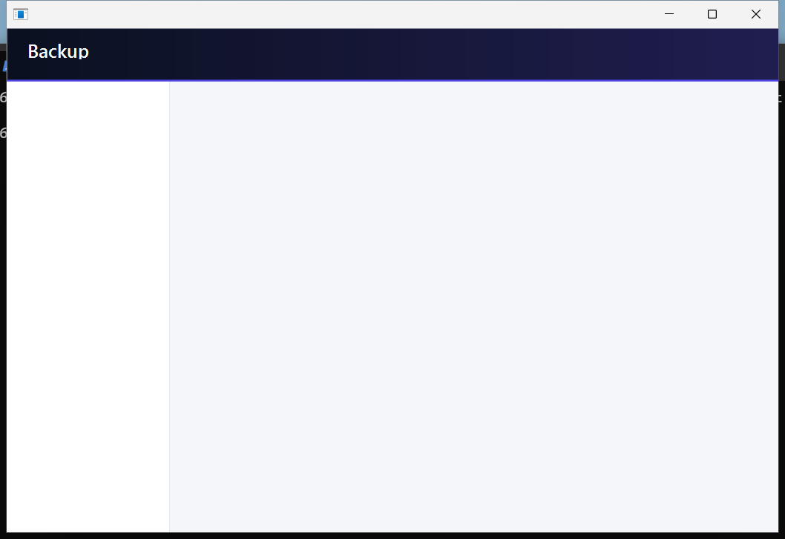
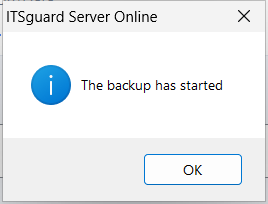

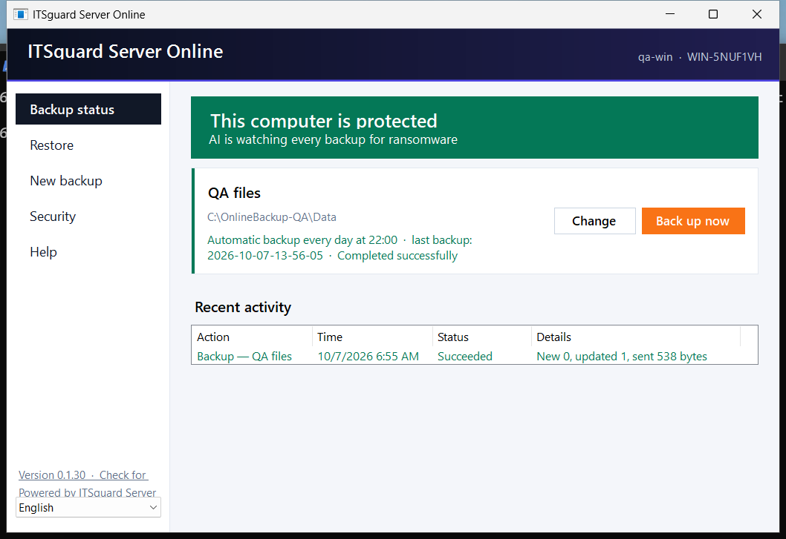
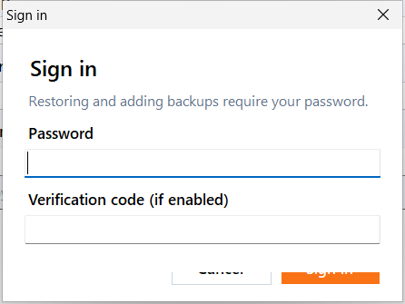
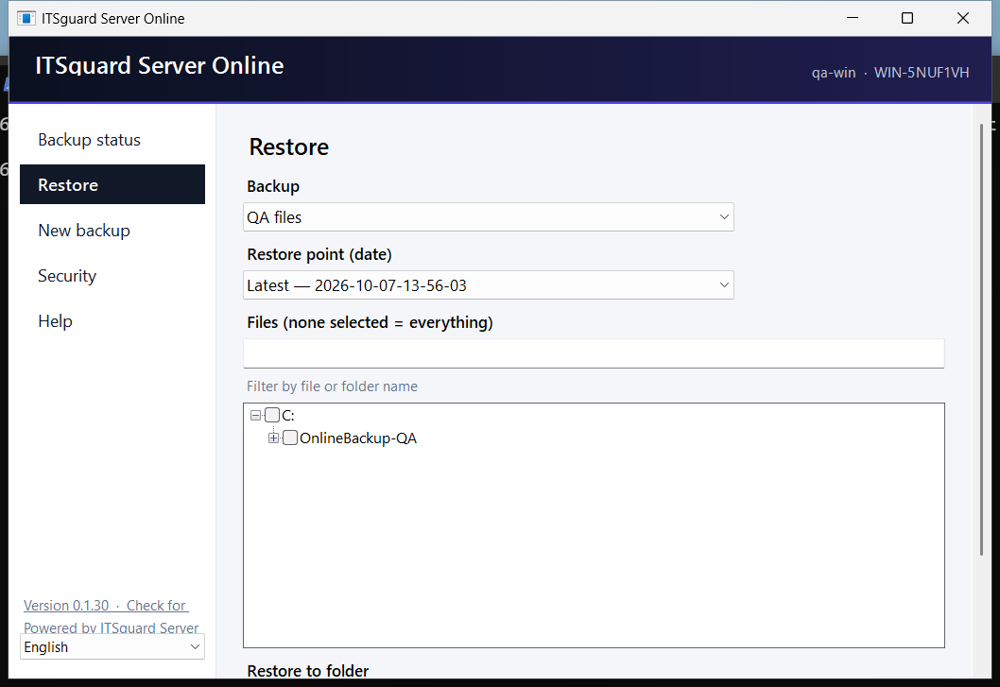

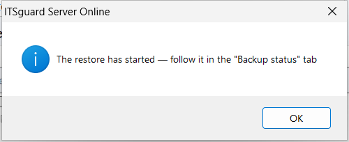

| Step | Result | Expected | Actual (what the oracle saw) | Screen |
|---|---|---|---|---|
| Windows really restarted | PASS | boot time after the journey started | boot 10/07/2026 06:54:07; asked 2026-10-07T06:53:54.4291357-07:00 | |
| Both services came back by themselves | PASS | Running, Running | agent Running, server Running | |
| The agent is connected again (server view) | PASS | connected, seen after the restart | connected=1 seen=1791381138067 | |
| No ghost run, no locked set | PASS | nothing live; no run left open on the server's disk | live 0; set folder C:\obqa\users\qa-win\files\1791381170615; open runs: 0 | |
| The schedule is kept | PASS | the same set settings as before the restart | <DAILY_SCHEDULE ID="1791381170620" NAME="Backup Schedule" HOUR="22" MINUTE="0" DURATION="-1" BACKUP_TYPE="FILE" BACKUP_INTERVAL="-1" ENABLED_SKIP_BACKUP="N" /> | |
| Backup after the restart - result | PASS | the server records a new run: ok; the window shows the result | server: BS_STOP_SUCCESS (new 0, bytes 538); window: Automatic backup every day at 22:00 · last backup: 2026-10-07-13-56-05 · Completed successfully ; messages: ITSguard Server Online: The backup has started | 04-Backup-after-the-restart---result.png |
| Restore after the restart - the source folder is deleted | PASS | no source folder (moved out of the product's reach until the check is done) | C:\OnlineBackup-QA\Data (kept by the robot in C:\obqa\source-aside-2) | |
| Accessibility | info | the field 'Password' has no name in UI Automation (a screen reader says only 'edit'); the robot found it under its label | ||
| Restore after the restart - sign-in when the Restore page opened | info | Sign in: Sign in Restoring and adding backups require your password. Password Verification code (if enabled) | ||
| Restore after the restart - Restore page | PASS | the backup, the latest point, the files, the folder | Restore | Backup | QA files | Restore point (date) | Latest — 2026-10-07-13-56-03 | Files (none selected = everything) | Filter by file or folder name | Restore to folder | C:\Users\Docker\Desktop\Restore | … | Replace existing files | Restore | Backup status | Restore | New backup | Security | Help | Version 0.1.30 · Check for updates | English | Powered by ITSguard Server Online | 06-Restore-after-the-restart---Restore-page.png |
| Accessibility | info | the field 'Restore to folder' has no name in UI Automation (a screen reader says only 'edit'); the robot found it under its label | ||
| Restore after the restart - messages | info | ITSguard Server Online: The restore has started — follow it in the "Backup status" tab | ||
| Restore after the restart - ORACLE: every restored file has the SHA-256 of the original | PASS | 112 files identical, nothing missing or extra | server: RESTORE_STOP_SUCCESS; files 112/112; differences 0: | |
| UX: Backup after the restart - the window shows the result of the backup | PASS | the card says the result | Automatic backup every day at 22:00 · last backup: 2026-10-07-13-56-05 · Completed successfully |
Evidence: windows-state.json · event-log.txt · service-events.txt · server-logs · 2-differences.txt · 2-restored.sha256
| Step | Result | Expected | Actual (what the oracle saw) | Screen |
|---|---|---|---|---|
| Scale | info | 125% (set before the restart; Windows applies it at sign-in) | ||
| Resolution 1920x1080 | info | NOT TESTED: asked 1920x1080, the screen is 1280x800 | ||
| Resolution 1366x768 | info | NOT TESTED: ChangeDisplaySettings -2 | ||
| Resolution 1024x768 | info | NOT TESTED: asked 1024x768, the screen is 1280x800 |
Evidence: windows-state.json · event-log.txt · service-events.txt · server-logs
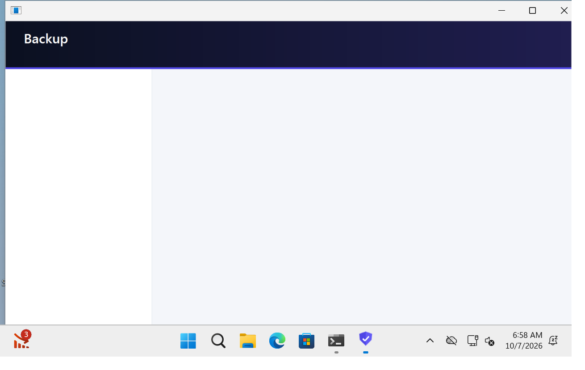
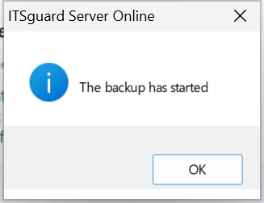

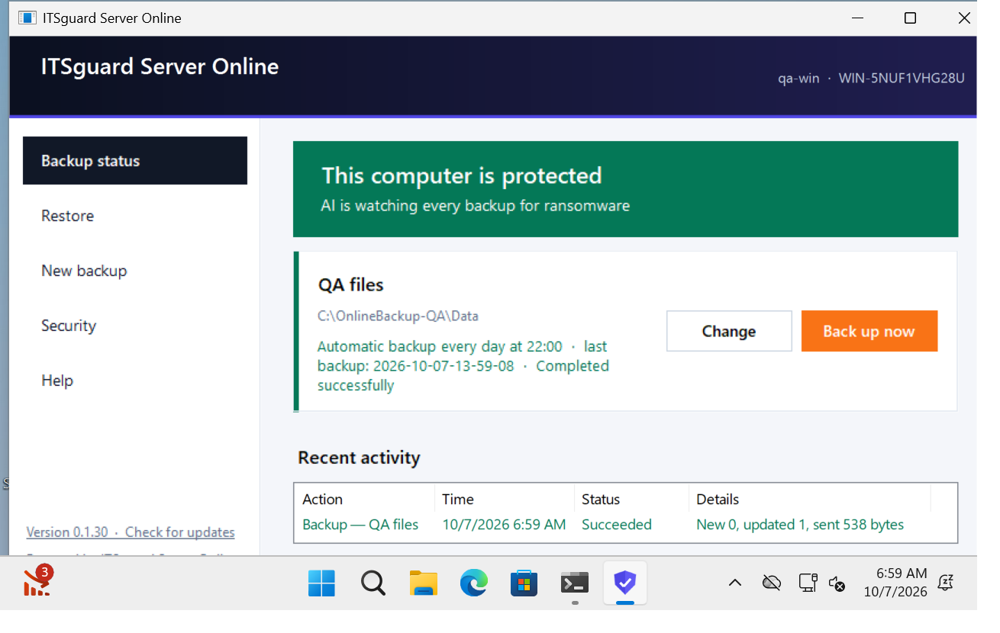
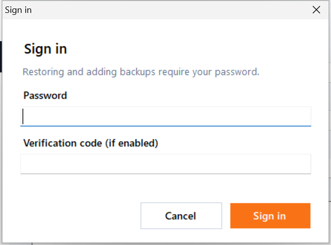
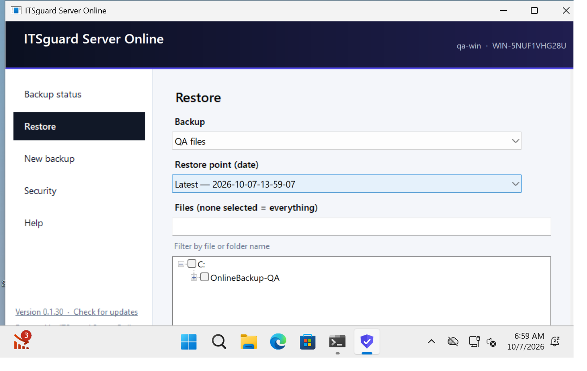

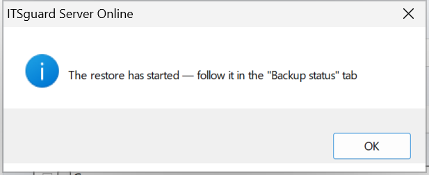

| Step | Result | Expected | Actual (what the oracle saw) | Screen |
|---|---|---|---|---|
| Windows really restarted | PASS | boot time after the journey started | boot 10/07/2026 06:57:14; asked 2026-10-07T06:57:02.1739902-07:00 | |
| Both services came back by themselves | PASS | Running, Running | agent Running, server Running | |
| The agent is connected again (server view) | PASS | connected, seen after the restart | connected=1 seen=1791381138067 | |
| No ghost run, no locked set | PASS | nothing live; no run left open on the server's disk | live 0; set folder C:\obqa\users\qa-win\files\1791381170615; open runs: 0 | |
| The schedule is kept | PASS | the same set settings as before the restart | <DAILY_SCHEDULE ID="1791381170620" NAME="Backup Schedule" HOUR="22" MINUTE="0" DURATION="-1" BACKUP_TYPE="FILE" BACKUP_INTERVAL="-1" ENABLED_SKIP_BACKUP="N" /> | |
| Backup after the restart - result | PASS | the server records a new run: ok; the window shows the result | server: BS_STOP_SUCCESS (new 0, bytes 538); window: Automatic backup every day at 22:00 · last backup: 2026-10-07-13-59-08 · Completed successfully ; messages: ITSguard Server Online: The backup has started | 04-Backup-after-the-restart---result.png |
| Restore after the restart - the source folder is deleted | PASS | no source folder (moved out of the product's reach until the check is done) | C:\OnlineBackup-QA\Data (kept by the robot in C:\obqa\source-aside-3) | |
| Accessibility | info | the field 'Password' has no name in UI Automation (a screen reader says only 'edit'); the robot found it under its label | ||
| Restore after the restart - sign-in when the Restore page opened | info | Sign in: Sign in Restoring and adding backups require your password. Password Verification code (if enabled) | ||
| Restore after the restart - Restore page | PASS | the backup, the latest point, the files, the folder | Restore | Backup | QA files | Restore point (date) | Latest — 2026-10-07-13-59-07 | Files (none selected = everything) | Filter by file or folder name | Restore to folder | C:\Users\Docker\Desktop\Restore | … | Replace existing files | Restore | Backup status | Restore | New backup | Security | Help | Version 0.1.30 · Check for updates | English | Powered by ITSguard Server Online | 06-Restore-after-the-restart---Restore-page.png |
| Accessibility | info | the field 'Restore to folder' has no name in UI Automation (a screen reader says only 'edit'); the robot found it under its label | ||
| Restore after the restart - messages | info | ITSguard Server Online: The restore has started — follow it in the "Backup status" tab | ||
| Restore after the restart - ORACLE: every restored file has the SHA-256 of the original | PASS | 112 files identical, nothing missing or extra | server: RESTORE_STOP_SUCCESS; files 112/112; differences 0: | |
| UX: Backup after the restart - the window shows the result of the backup | PASS | the card says the result | Automatic backup every day at 22:00 · last backup: 2026-10-07-13-59-08 · Completed successfully |
Evidence: windows-state.json · event-log.txt · service-events.txt · server-logs · 3-differences.txt · 3-restored.sha256
| Step | Result | Expected | Actual (what the oracle saw) | Screen |
|---|---|---|---|---|
| Scale | info | 150% (set before the restart; Windows applies it at sign-in) | ||
| Resolution 1920x1080 | info | NOT TESTED: asked 1920x1080, the screen is 1280x800 | ||
| Resolution 1366x768 | info | NOT TESTED: ChangeDisplaySettings -2 | ||
| Resolution 1024x768 | info | NOT TESTED: asked 1024x768, the screen is 1280x800 |
Evidence: windows-state.json · event-log.txt · service-events.txt · server-logs
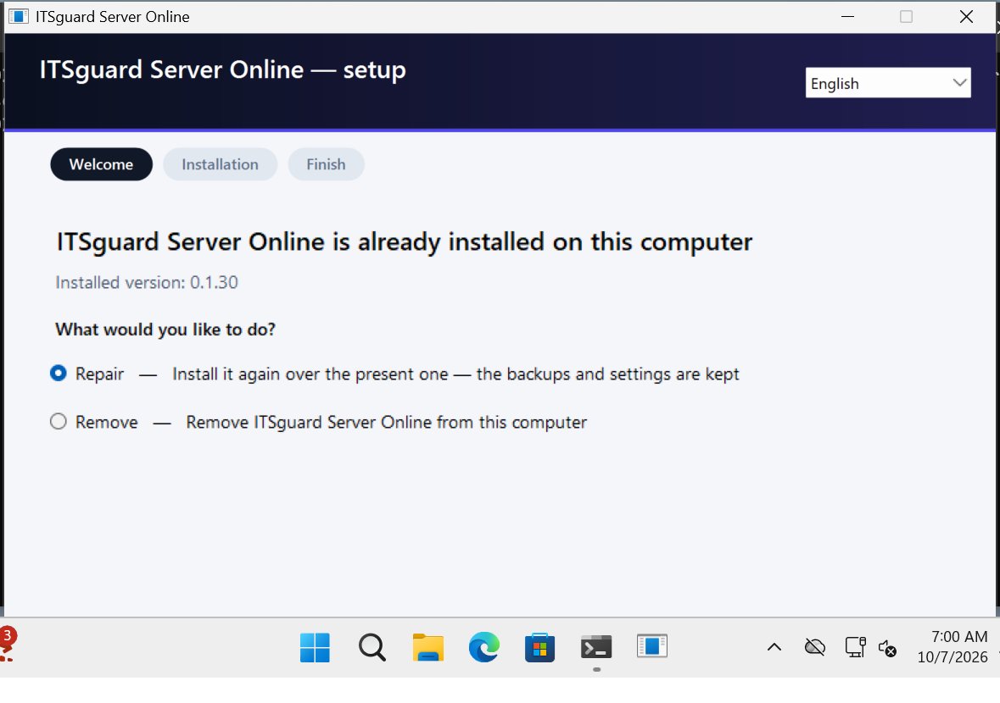
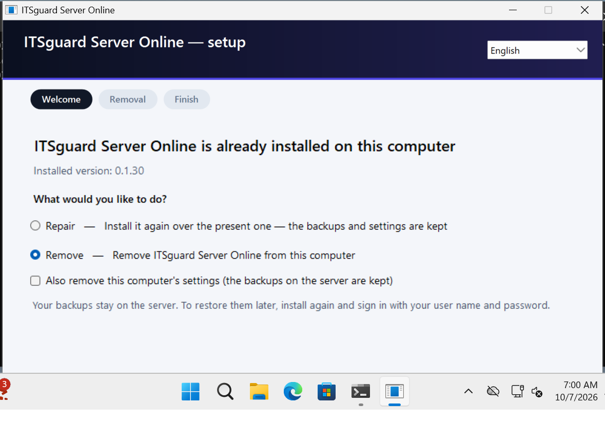
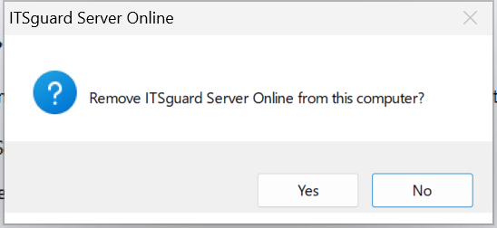
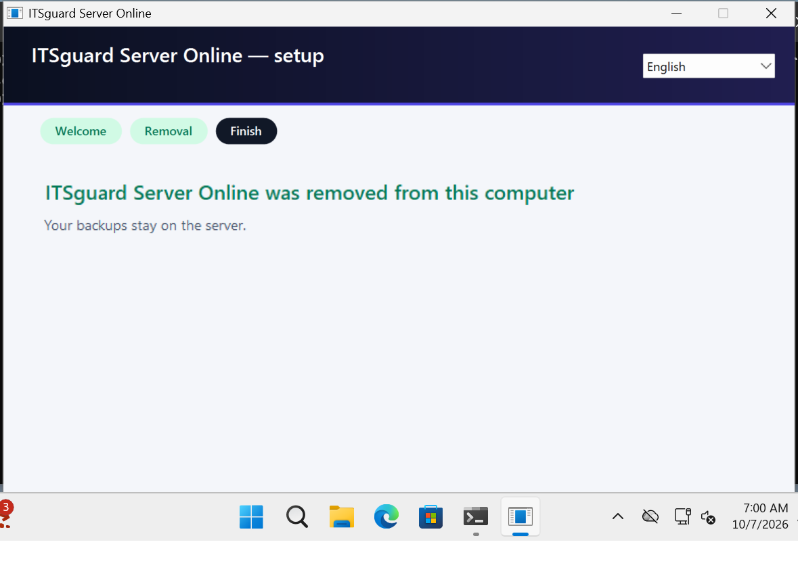

| Step | Result | Expected | Actual (what the oracle saw) | Screen |
|---|---|---|---|---|
| Maintenance - Setup sees the installation (remove) | PASS | "already installed" with the choices | ITSguard Server Online is already installed on this computer | Installed version: 0.1.30 | What would you like to do? | Repair — Install it again over the present one — the backups and settings are kept | Remove — Remove ITSguard Server Online from this computer | English | Repair | Cancel | 01-Maintenance---Setup-sees-the-installation--remove-.png |
| Choose remove | PASS | a 'remove' choice | Repair — Install it again over the present one — the backups and settings are kept / Remove — Remove ITSguard Server Online from this computer / Repair / Cancel | |
| Removal asks for confirmation | PASS | a Yes / No question in front | Remove ITSguard Server Online from this computer? | 03-Removal-asks-for-confirmation.png |
| Maintenance - remove finished | PASS | the Finish page (*was removed*) | ITSguard Server Online was removed from this computer | Your backups stay on the server. | English | Finish | 05-Maintenance---remove-finished.png |
| Removed: no service, no entry in the installed programs, no program files | PASS | all gone | service False; entries 0; files False | |
| The backups are still on the server | PASS | the same finished runs and the same data bytes as before the uninstall, not zero | before: 3 finished runs, 24381042 bytes; after: 3 runs, 24381042 bytes in C:\obqa\users\qa-win\files\1791381170615 |
Evidence: windows-state.json · event-log.txt · service-events.txt · server-logs
Findings are for a person to judge with the screenshot. A change of the screens' flow needs the owner's approval first.
| Journey | Kind | Severity | Screen | Problem | Expected | Actual | Recommendation | Screenshot |
|---|---|---|---|---|---|---|---|---|
| vm/out/vm-1-before-restart/W04 | VISUAL | High | Client 03 - Signing in - dialog: ITSguard Server Online | The window is empty (one colour) | the screen content | 100.0% of the window one colour | The content did not draw: check what the window was waiting for | |
| vm/out/vm-1-before-restart/W04 | VISUAL | High | Client 03 - Signing in - dialog: ITSguard Server Online | A message is not in front | the message in front of the window | 'This computer is connected. Now choose what to back up.' is open but another window is in front | Show the message owned by the window that asked for it | |
| vm/out/vm-1-before-restart/W04 | VISUAL | High | Client 04 - Connected: the program asks what to back up | A Edit is outside the window | every control inside the window | 'Documents' at 368,287 984x27; window 112,16 1056x719 | Lay the screen out for this window size (or let it scroll) | |
| vm/out/vm-1-before-restart/W05 | VISUAL | High | Client 07 - Adding the backup - dialog: ITSguard Server Online | The window is empty (one colour) | the screen content | 100.0% of the window one colour | The content did not draw: check what the window was waiting for | |
| vm/out/vm-1-before-restart/W05 | VISUAL | High | Client 07 - Adding the backup - dialog: ITSguard Server Online | A message is not in front | the message in front of the window | 'The backup was added' is open but another window is in front | Show the message owned by the window that asked for it | |
| vm/out/vm-1-before-restart/W05 | VISUAL | High | Backup 1 - started - dialog: ITSguard Server Online | The window is empty (one colour) | the screen content | 100.0% of the window one colour | The content did not draw: check what the window was waiting for | |
| vm/out/vm-1-before-restart/W05 | VISUAL | High | Backup 1 - started - dialog: ITSguard Server Online | A message is not in front | the message in front of the window | 'The backup has started' is open but another window is in front | Show the message owned by the window that asked for it | |
| vm/out/vm-1-before-restart/W05 | VISUAL | High | Restore 1 - Restore page | A Button is outside the window | every control inside the window | 'Replace existing files' at 368,712 764x28; window 112,16 1056x719 | Lay the screen out for this window size (or let it scroll) | |
| vm/out/vm-1-before-restart/W05 | VISUAL | High | Restore 1 - Restore page | A Button is outside the window | every control inside the window | 'Restore' at 368,748 110x36; window 112,16 1056x719 | Lay the screen out for this window size (or let it scroll) | |
| vm/out/vm-1-before-restart/W05 | VISUAL | High | Restore 1 - Restore selection | A Button is outside the window | every control inside the window | 'Replace existing files' at 368,712 764x28; window 112,16 1056x719 | Lay the screen out for this window size (or let it scroll) | |
| vm/out/vm-1-before-restart/W05 | VISUAL | High | Restore 1 - Restore selection | A Button is outside the window | every control inside the window | 'Restore' at 368,748 110x36; window 112,16 1056x719 | Lay the screen out for this window size (or let it scroll) | |
| vm/out/vm-1-before-restart/W05 | VISUAL | High | Restore 1 - Restore started - dialog: ITSguard Server Online | The window is empty (one colour) | the screen content | 100.0% of the window one colour | The content did not draw: check what the window was waiting for | |
| vm/out/vm-1-before-restart/W05 | VISUAL | High | Restore 1 - Restore started - dialog: ITSguard Server Online | A message is not in front | the message in front of the window | 'The restore has started — follow it in the "Backup status" tab' is open but another window is in front | Show the message owned by the window that asked for it | |
| vm/out/vm-1-before-restart/W05 | VISUAL | High | Restore 1 - restore result in the window | A Button is outside the window | every control inside the window | 'Replace existing files' at 368,732 747x28; window 112,16 1056x719 | Lay the screen out for this window size (or let it scroll) | |
| vm/out/vm-1-before-restart/W05 | VISUAL | High | Restore 1 - restore result in the window | A Button is outside the window | every control inside the window | 'Restore' at 368,768 110x36; window 112,16 1056x719 | Lay the screen out for this window size (or let it scroll) | |
| vm/out/vm-2-after-restart-125/W19 | VISUAL | High | Restore after the restart - Restore page | A Edit is outside the window | every control inside the window | 'C:\Users\Docker\Desktop\Restore' at 368,733 691x32; window 111,6 1058x727 | Lay the screen out for this window size (or let it scroll) |  |
| vm/out/vm-2-after-restart-125/W19 | VISUAL | High | Restore after the restart - Restore page | A Button is outside the window | every control inside the window | '…' at 1001,733 110x32; window 111,6 1058x727 | Lay the screen out for this window size (or let it scroll) | |
| vm/out/vm-2-after-restart-125/W19 | VISUAL | High | Restore after the restart - Restore page | A Button is outside the window | every control inside the window | 'Replace existing files' at 368,775 743x28; window 111,6 1058x727 | Lay the screen out for this window size (or let it scroll) | |
| vm/out/vm-2-after-restart-125/W19 | VISUAL | High | Restore after the restart - Restore page | A Button is outside the window | every control inside the window | 'Restore' at 368,811 110x36; window 111,6 1058x727 | Lay the screen out for this window size (or let it scroll) | |
| vm/out/vm-2-after-restart-125/W19 | VISUAL | High | Restore after the restart - Restore selection | A Edit is outside the window | every control inside the window | 'C:\obqa\restore-2' at 368,733 691x32; window 111,6 1058x727 | Lay the screen out for this window size (or let it scroll) | |
| vm/out/vm-2-after-restart-125/W19 | VISUAL | High | Restore after the restart - Restore selection | A Button is outside the window | every control inside the window | '…' at 1001,733 110x32; window 111,6 1058x727 | Lay the screen out for this window size (or let it scroll) | |
| vm/out/vm-2-after-restart-125/W19 | VISUAL | High | Restore after the restart - Restore selection | A Button is outside the window | every control inside the window | 'Replace existing files' at 368,775 743x28; window 111,6 1058x727 | Lay the screen out for this window size (or let it scroll) | |
| vm/out/vm-2-after-restart-125/W19 | VISUAL | High | Restore after the restart - Restore selection | A Button is outside the window | every control inside the window | 'Restore' at 368,811 110x36; window 111,6 1058x727 | Lay the screen out for this window size (or let it scroll) | |
| vm/out/vm-2-after-restart-125/W19 | VISUAL | High | Restore after the restart - restore result in the window | A Edit is outside the window | every control inside the window | 'C:\Users\Docker\Desktop\Restore' at 368,733 691x32; window 111,6 1058x727 | Lay the screen out for this window size (or let it scroll) | 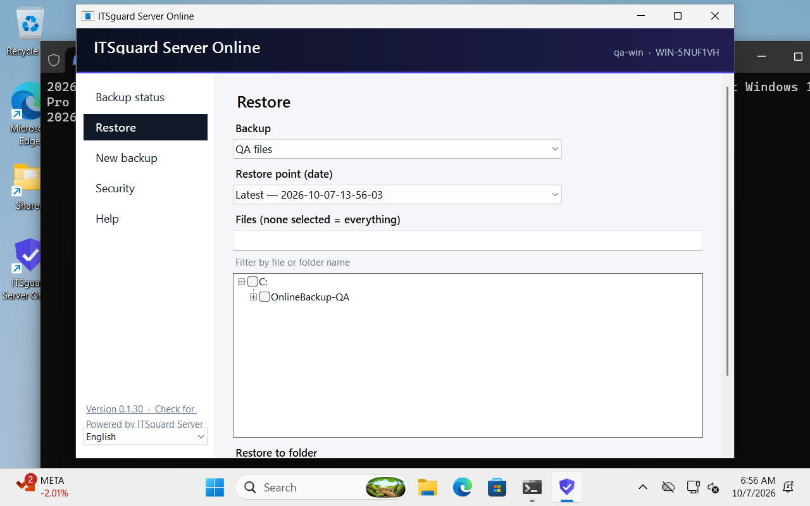 |
| vm/out/vm-2-after-restart-125/W19 | VISUAL | High | Restore after the restart - restore result in the window | A Button is outside the window | every control inside the window | '…' at 1001,733 110x32; window 111,6 1058x727 | Lay the screen out for this window size (or let it scroll) | |
| vm/out/vm-2-after-restart-125/W19 | VISUAL | High | Restore after the restart - restore result in the window | A Button is outside the window | every control inside the window | 'Replace existing files' at 368,775 743x28; window 111,6 1058x727 | Lay the screen out for this window size (or let it scroll) | |
| vm/out/vm-2-after-restart-125/W19 | VISUAL | High | Restore after the restart - restore result in the window | A Button is outside the window | every control inside the window | 'Restore' at 368,811 110x36; window 111,6 1058x727 | Lay the screen out for this window size (or let it scroll) | |
| vm/out/vm-3-after-restart-150/W19 | VISUAL | High | The program after the restart | The window is larger than the screen | fits in 1280x728 | 1310x830 | Smaller minimum size, or scroll inside the window | 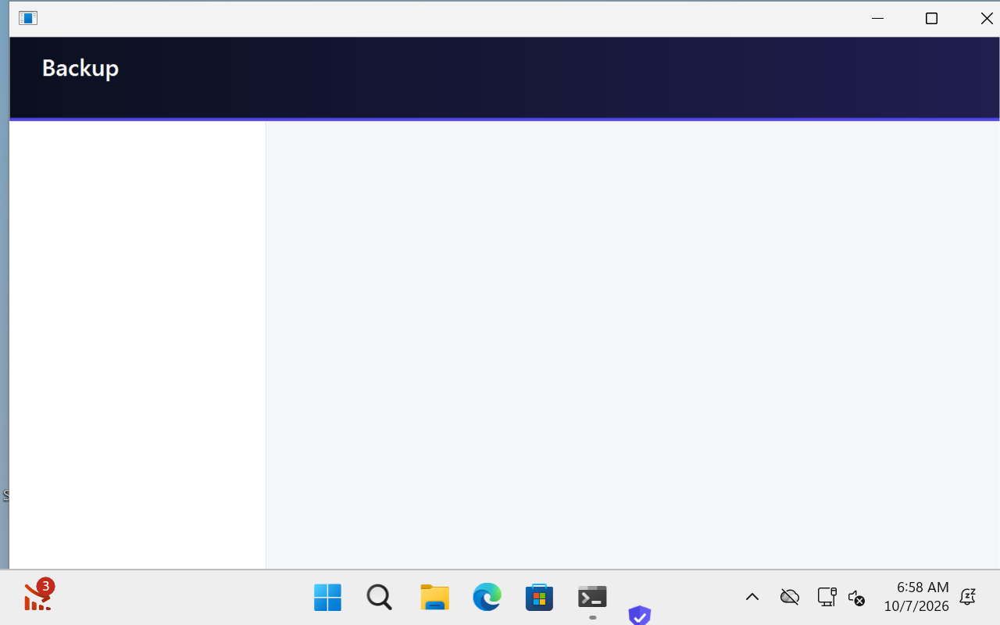 |
| vm/out/vm-3-after-restart-150/W19 | VISUAL | High | Backup after the restart - running | The window is larger than the screen | fits in 1280x728 | 1310x830 | Smaller minimum size, or scroll inside the window | 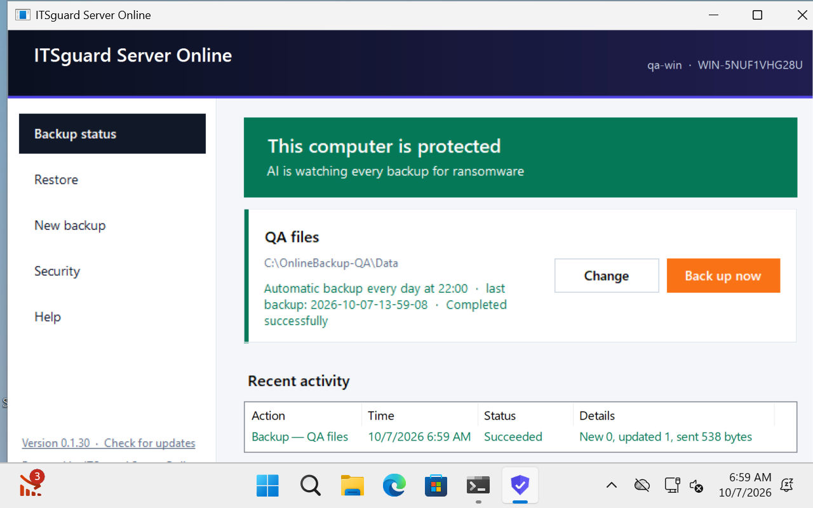 |
| vm/out/vm-3-after-restart-150/W19 | VISUAL | High | Backup after the restart - result | The window is larger than the screen | fits in 1280x728 | 1310x830 | Smaller minimum size, or scroll inside the window |  |
| vm/out/vm-3-after-restart-150/W19 | VISUAL | High | Restore after the restart - Restore page | The window is larger than the screen | fits in 1280x728 | 1310x830 | Smaller minimum size, or scroll inside the window |  |
| vm/out/vm-3-after-restart-150/W19 | VISUAL | High | Restore after the restart - Restore page | A Edit is outside the window | every control inside the window | 'C:\Users\Docker\Desktop\Restore' at 384,1019 768x41; window 0,0 1310x830 | Lay the screen out for this window size (or let it scroll) | |
| vm/out/vm-3-after-restart-150/W19 | VISUAL | High | Restore after the restart - Restore page | A Button is outside the window | every control inside the window | '…' at 1065,1019 165x45; window 0,0 1310x830 | Lay the screen out for this window size (or let it scroll) | |
| vm/out/vm-3-after-restart-150/W19 | VISUAL | High | Restore after the restart - Restore page | A Button is outside the window | every control inside the window | 'Replace existing files' at 384,1074 846x42; window 0,0 1310x830 | Lay the screen out for this window size (or let it scroll) | |
| vm/out/vm-3-after-restart-150/W19 | VISUAL | High | Restore after the restart - Restore page | A Button is outside the window | every control inside the window | 'Restore' at 384,1128 165x54; window 0,0 1310x830 | Lay the screen out for this window size (or let it scroll) | |
| vm/out/vm-3-after-restart-150/W19 | VISUAL | High | Restore after the restart - Restore selection | The window is larger than the screen | fits in 1280x728 | 1310x830 | Smaller minimum size, or scroll inside the window | 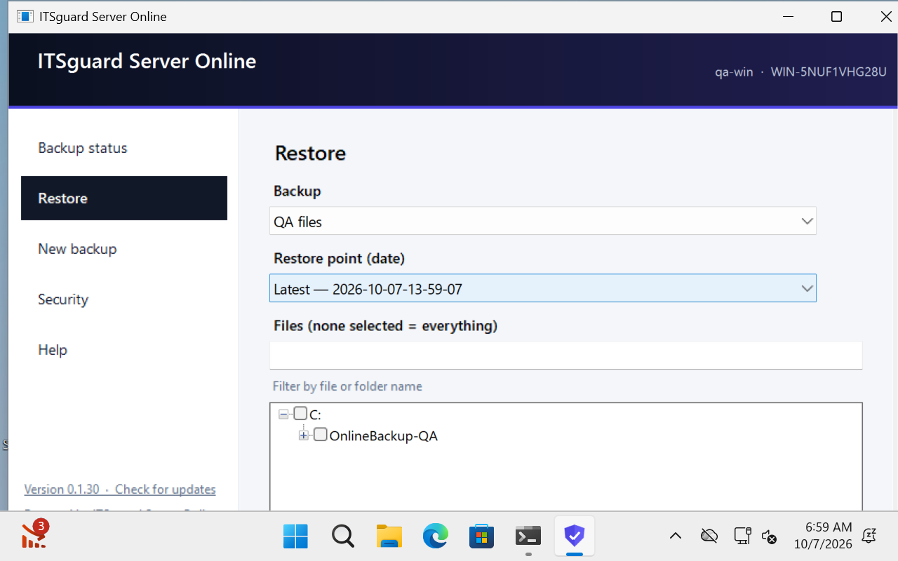 |
| vm/out/vm-3-after-restart-150/W19 | VISUAL | High | Restore after the restart - Restore selection | A Edit is outside the window | every control inside the window | 'C:\obqa\restore-3' at 384,1019 768x41; window 0,0 1310x830 | Lay the screen out for this window size (or let it scroll) | |
| vm/out/vm-3-after-restart-150/W19 | VISUAL | High | Restore after the restart - Restore selection | A Button is outside the window | every control inside the window | '…' at 1065,1019 165x45; window 0,0 1310x830 | Lay the screen out for this window size (or let it scroll) | |
| vm/out/vm-3-after-restart-150/W19 | VISUAL | High | Restore after the restart - Restore selection | A Button is outside the window | every control inside the window | 'Replace existing files' at 384,1074 846x42; window 0,0 1310x830 | Lay the screen out for this window size (or let it scroll) | |
| vm/out/vm-3-after-restart-150/W19 | VISUAL | High | Restore after the restart - Restore selection | A Button is outside the window | every control inside the window | 'Restore' at 384,1128 165x54; window 0,0 1310x830 | Lay the screen out for this window size (or let it scroll) | |
| vm/out/vm-3-after-restart-150/W19 | VISUAL | High | Restore after the restart - restore result in the window | The window is larger than the screen | fits in 1280x728 | 1310x830 | Smaller minimum size, or scroll inside the window | |
| vm/out/vm-3-after-restart-150/W19 | VISUAL | High | Restore after the restart - restore result in the window | A Edit is outside the window | every control inside the window | 'C:\Users\Docker\Desktop\Restore' at 384,1019 768x41; window 0,0 1310x830 | Lay the screen out for this window size (or let it scroll) | |
| vm/out/vm-3-after-restart-150/W19 | VISUAL | High | Restore after the restart - restore result in the window | A Button is outside the window | every control inside the window | '…' at 1065,1019 165x45; window 0,0 1310x830 | Lay the screen out for this window size (or let it scroll) | |
| vm/out/vm-3-after-restart-150/W19 | VISUAL | High | Restore after the restart - restore result in the window | A Button is outside the window | every control inside the window | 'Replace existing files' at 384,1074 846x42; window 0,0 1310x830 | Lay the screen out for this window size (or let it scroll) | |
| vm/out/vm-3-after-restart-150/W19 | VISUAL | High | Restore after the restart - restore result in the window | A Button is outside the window | every control inside the window | 'Restore' at 384,1128 165x54; window 0,0 1310x830 | Lay the screen out for this window size (or let it scroll) | |
| vm/out/vm-3-after-restart-150/W21 | VISUAL | High | Maintenance - Setup sees the installation (remove) | The window is larger than the screen | fits in 1280x728 | 1179x830 | Smaller minimum size, or scroll inside the window | 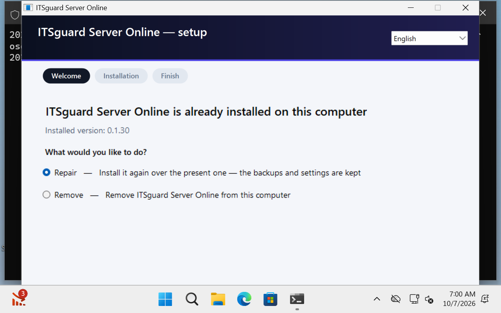 |
| vm/out/vm-3-after-restart-150/W21 | VISUAL | High | Maintenance - remove chosen | The window is larger than the screen | fits in 1280x728 | 1179x830 | Smaller minimum size, or scroll inside the window | 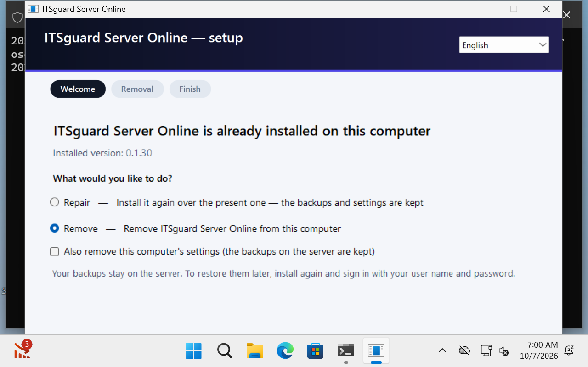 |
| vm/out/vm-3-after-restart-150/W21 | VISUAL | High | Maintenance - remove running | The window is larger than the screen | fits in 1280x728 | 1179x830 | Smaller minimum size, or scroll inside the window | 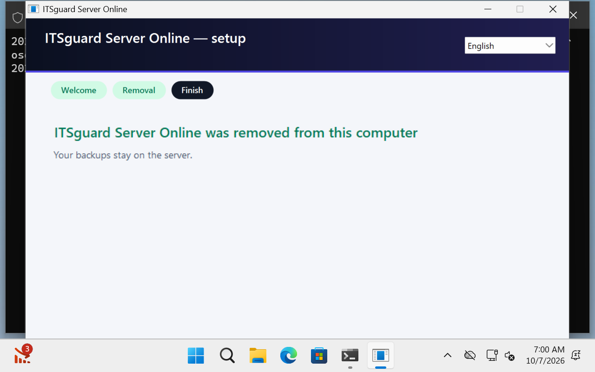 |
| vm/out/vm-3-after-restart-150/W21 | VISUAL | High | Maintenance - remove finished | The window is larger than the screen | fits in 1280x728 | 1179x830 | Smaller minimum size, or scroll inside the window | |
| vm/out/vm-1-before-restart/W04 | VISUAL | Medium | Client 04 - Connected: the program asks what to back up | A Pane is outside the window | every control inside the window | '' at 368,123 984x604; window 112,16 1056x719 | Lay the screen out for this window size (or let it scroll) | |
| vm/out/vm-1-before-restart/W04 | VISUAL | Medium | Client 04 - Connected: the program asks what to back up | A Text is outside the window | every control inside the window | 'New backup' at 368,129 984x30; window 112,16 1056x719 | Lay the screen out for this window size (or let it scroll) | |
| vm/out/vm-1-before-restart/W04 | VISUAL | Medium | Client 04 - Connected: the program asks what to back up | A Text is outside the window | every control inside the window | 'Files are encrypted on this computer before they leave, with your password. Without the password nothing can be restored — keep it safe.' at 368,167 984x19; window 112,16 1056x719 | Lay the screen out for this window size (or let it scroll) | |
| vm/out/vm-1-before-restart/W04 | VISUAL | Medium | Client 04 - Connected: the program asks what to back up | A Text is outside the window | every control inside the window | 'Backup type' at 368,198 984x21; window 112,16 1056x719 | Lay the screen out for this window size (or let it scroll) | |
| vm/out/vm-1-before-restart/W04 | VISUAL | Medium | Client 04 - Connected: the program asks what to back up | A Text is outside the window | every control inside the window | 'Backup name' at 368,262 984x21; window 112,16 1056x719 | Lay the screen out for this window size (or let it scroll) | |
| vm/out/vm-1-before-restart/W04 | VISUAL | Medium | Client 04 - Connected: the program asks what to back up | A Text is outside the window | every control inside the window | 'Folders to back up' at 368,326 984x21; window 112,16 1056x719 | Lay the screen out for this window size (or let it scroll) | |
| vm/out/vm-1-before-restart/W04 | VISUAL | Medium | Client 04 - Connected: the program asks what to back up | A Tree is outside the window | every control inside the window | '' at 368,355 984x240; window 112,16 1056x719 | Lay the screen out for this window size (or let it scroll) | |
| vm/out/vm-1-before-restart/W04 | VISUAL | Medium | Client 04 - Connected: the program asks what to back up | A Text is outside the window | every control inside the window | 'Daily backup time' at 368,607 984x21; window 112,16 1056x719 | Lay the screen out for this window size (or let it scroll) | |
| vm/out/vm-1-before-restart/W05 | VISUAL | Medium | Client 05 - New backup page | A Pane is outside the window | every control inside the window | '' at 368,119 747x621; window 112,16 1056x719 | Lay the screen out for this window size (or let it scroll) | |
| vm/out/vm-1-before-restart/W05 | VISUAL | Medium | Client 06 - Backup configured | A Pane is outside the window | every control inside the window | '' at 368,119 747x621; window 112,16 1056x719 | Lay the screen out for this window size (or let it scroll) | 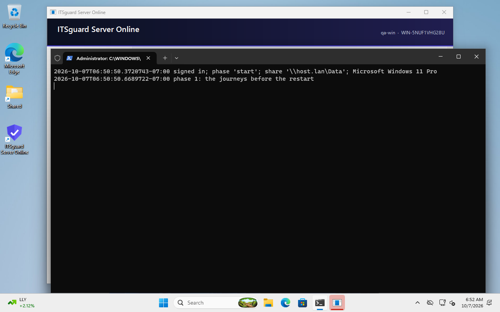 |
| vm/out/vm-1-before-restart/W05 | VISUAL | Medium | Restore 1 - Restore page | A Pane is outside the window | every control inside the window | '' at 368,119 764x687; window 112,16 1056x719 | Lay the screen out for this window size (or let it scroll) | |
| vm/out/vm-1-before-restart/W05 | VISUAL | Medium | Restore 1 - Restore page | Two controls on top of each other | controls side by side | 'C:\Users\Docker\Desktop\Restore' (Edit) and '…' (Button) share 47% | Fix the layout of this screen | |
| vm/out/vm-1-before-restart/W05 | VISUAL | Medium | Restore 1 - Restore selection | A Pane is outside the window | every control inside the window | '' at 368,119 764x687; window 112,16 1056x719 | Lay the screen out for this window size (or let it scroll) | |
| vm/out/vm-1-before-restart/W05 | VISUAL | Medium | Restore 1 - Restore selection | Two controls on top of each other | controls side by side | 'C:\obqa\restore-1' (Edit) and '…' (Button) share 47% | Fix the layout of this screen | |
| vm/out/vm-1-before-restart/W05 | VISUAL | Medium | Restore 1 - restore result in the window | A Pane is outside the window | every control inside the window | '' at 368,139 747x687; window 112,16 1056x719 | Lay the screen out for this window size (or let it scroll) | |
| vm/out/vm-1-before-restart/W05 | VISUAL | Medium | Restore 1 - restore result in the window | Two controls on top of each other | controls side by side | 'C:\Users\Docker\Desktop\Restore' (Edit) and '…' (Button) share 47% | Fix the layout of this screen | |
| vm/out/vm-2-after-restart-125/W19 | VISUAL | Medium | Restore after the restart - Restore page | A Pane is outside the window | every control inside the window | '' at 368,136 743x733; window 111,6 1058x727 | Lay the screen out for this window size (or let it scroll) | |
| vm/out/vm-2-after-restart-125/W19 | VISUAL | Medium | Restore after the restart - Restore page | Two controls on top of each other | controls side by side | 'C:\Users\Docker\Desktop\Restore' (Edit) and '…' (Button) share 53% | Fix the layout of this screen | |
| vm/out/vm-2-after-restart-125/W19 | VISUAL | Medium | Restore after the restart - Restore selection | A Pane is outside the window | every control inside the window | '' at 368,136 743x733; window 111,6 1058x727 | Lay the screen out for this window size (or let it scroll) | |
| vm/out/vm-2-after-restart-125/W19 | VISUAL | Medium | Restore after the restart - Restore selection | Two controls on top of each other | controls side by side | 'C:\obqa\restore-2' (Edit) and '…' (Button) share 53% | Fix the layout of this screen | |
| vm/out/vm-2-after-restart-125/W19 | VISUAL | Medium | Restore after the restart - restore result in the window | A Pane is outside the window | every control inside the window | '' at 368,136 743x733; window 111,6 1058x727 | Lay the screen out for this window size (or let it scroll) | |
| vm/out/vm-2-after-restart-125/W19 | VISUAL | Medium | Restore after the restart - restore result in the window | Two controls on top of each other | controls side by side | 'C:\Users\Docker\Desktop\Restore' (Edit) and '…' (Button) share 53% | Fix the layout of this screen | |
| vm/out/vm-3-after-restart-150/W19 | VISUAL | Medium | Restore after the restart - Restore page | A Pane is outside the window | every control inside the window | '' at 384,185 846x1031; window 0,0 1310x830 | Lay the screen out for this window size (or let it scroll) | |
| vm/out/vm-3-after-restart-150/W19 | VISUAL | Medium | Restore after the restart - Restore page | A Tree is outside the window | every control inside the window | '' at 384,573 846x390; window 0,0 1310x830 | Lay the screen out for this window size (or let it scroll) | |
| vm/out/vm-3-after-restart-150/W19 | VISUAL | Medium | Restore after the restart - Restore page | A Text is outside the window | every control inside the window | 'Restore to folder' at 384,981 846x32; window 0,0 1310x830 | Lay the screen out for this window size (or let it scroll) | |
| vm/out/vm-3-after-restart-150/W19 | VISUAL | Medium | Restore after the restart - Restore page | Two controls on top of each other | controls side by side | 'C:\Users\Docker\Desktop\Restore' (Edit) and '…' (Button) share 48% | Fix the layout of this screen | |
| vm/out/vm-3-after-restart-150/W19 | VISUAL | Medium | Restore after the restart - Restore selection | A Pane is outside the window | every control inside the window | '' at 384,185 846x1031; window 0,0 1310x830 | Lay the screen out for this window size (or let it scroll) | |
| vm/out/vm-3-after-restart-150/W19 | VISUAL | Medium | Restore after the restart - Restore selection | A Tree is outside the window | every control inside the window | '' at 384,573 846x390; window 0,0 1310x830 | Lay the screen out for this window size (or let it scroll) | |
| vm/out/vm-3-after-restart-150/W19 | VISUAL | Medium | Restore after the restart - Restore selection | A Text is outside the window | every control inside the window | 'Restore to folder' at 384,981 846x32; window 0,0 1310x830 | Lay the screen out for this window size (or let it scroll) | |
| vm/out/vm-3-after-restart-150/W19 | VISUAL | Medium | Restore after the restart - Restore selection | Two controls on top of each other | controls side by side | 'C:\obqa\restore-3' (Edit) and '…' (Button) share 48% | Fix the layout of this screen | |
| vm/out/vm-3-after-restart-150/W19 | VISUAL | Medium | Restore after the restart - restore result in the window | A Pane is outside the window | every control inside the window | '' at 384,185 846x1031; window 0,0 1310x830 | Lay the screen out for this window size (or let it scroll) | |
| vm/out/vm-3-after-restart-150/W19 | VISUAL | Medium | Restore after the restart - restore result in the window | A Tree is outside the window | every control inside the window | '' at 384,573 846x390; window 0,0 1310x830 | Lay the screen out for this window size (or let it scroll) | |
| vm/out/vm-3-after-restart-150/W19 | VISUAL | Medium | Restore after the restart - restore result in the window | A Text is outside the window | every control inside the window | 'Restore to folder' at 384,981 846x32; window 0,0 1310x830 | Lay the screen out for this window size (or let it scroll) | |
| vm/out/vm-3-after-restart-150/W19 | VISUAL | Medium | Restore after the restart - restore result in the window | Two controls on top of each other | controls side by side | 'C:\Users\Docker\Desktop\Restore' (Edit) and '…' (Button) share 48% | Fix the layout of this screen | |
| vm/out/vm-1-before-restart/W03 | UX | Low | Installer: a "Ready to install" summary before installing | Installer: a "Ready to install" summary before installing | a page listing what will be installed and where | the license page's button installs at once (no configuration or ready page) | Proposal only - the owner decides (the UX spec is not approved yet) |